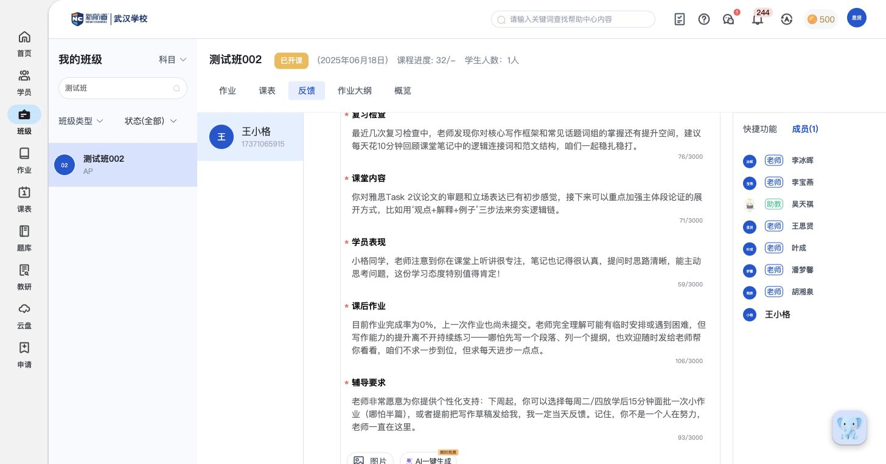

XX007核心教师端
学员档案
集中查看学生基础信息、关联班级与入学测评记录。
教师端怎样实现
- 基础资料包括联系方式、学校、年级、顾问等；页面分别显示学生和家长的公众号关注状态。
- 同一学生可以关联多个班级，查看各班级的课程名称、开课时间和在读状态。
- 入学模考有日期、题目、状态、做题时长和分数的记录位置。

原菜单说明：教师 · 学员档案
依据边界：入学模考当前缺有数据样例；关注状态不等于消息已经送达。
对比自己的产品：跨班级学习时，学生的资料和学习历史是否仍归在同一档案中。
功能板块 01
围绕学生个人和班级群体，管理档案、学习记录及跟进信息。
先看下表的模块与小功能，再点击子功能查看具体图文。核心与次要标记保留在对应行内。
| 功能模块 | 子功能 | 具体功能点 | 使用端 | 重要性 |
|---|---|---|---|---|
| 学员档案与跟进 了解这个学生的背景、练习与考试情况，保留沟通记录。 | 学员档案 |
| 教师 | 核心 |
| 个人练习记录 |
| 教师、学员 | 核心 | |
| 考试成绩档案 |
| 教师 | 次要 | |
| 回访记录 |
| 教师 | 次要 | |
| 班级管理 把学生组织成教学群体，比较班级学习表现，再进入个人档案。 | 班级概况与成员 |
| 教师 | 核心 |
| 班级作业情况 |
| 教师 | 核心 |
集中查看学生基础信息、关联班级与入学测评记录。
原菜单说明：教师 · 学员档案
依据边界：入学模考当前缺有数据样例；关注状态不等于消息已经送达。
对比自己的产品：跨班级学习时，学生的资料和学习历史是否仍归在同一档案中。
按学生或资源回看练习状态、成绩、时间和训练方式。

原菜单说明：教师 · 练习记录

原菜单说明：学员 · 练习记录
两端关系：当前只确认两端入口，具体对应规则见下方依据边界。
依据边界：两端均有练习记录入口；未确认所有自主练习都会自动归集到教师端。
对比自己的产品：是否能从个人档案统一查看多种练习记录，而不用到各类作业中逐个寻找。
记录正式考试的日期、地点、总分、分项和凭证。

原菜单说明：教师 · 考试记录
依据边界：已有保存并回读的SAT样例；通知送达、附件上传及成绩自动同步尚未确认。
对比自己的产品：能否记录不同考试的分项成绩、考试安排及凭证。
记录沟通内容、图片与回访时间，保留下次跟进日期。

原菜单说明：教师 · 回访记录
依据边界：已有保存的测试回访；下次回访日期是否触发提醒未确认。
对比自己的产品：沟通记录能否持续积累，并接上下一次跟进。
查看班级开课状态、课程进度和师生名单，从班级进入个人学习档案。


原菜单说明：教师 · 班级成员 · 教师 · 班级概况依据
依据边界：当前教师端未见新建班级入口；不据此判断其他角色能否建班。
对比自己的产品：能否同时了解班级教学进度和成员，再从班级快速进入个人跟进。
在学生与作业的矩阵中比较全班表现，再进入个人结果。

原菜单说明：教师 · 班级作业情况
依据边界：首页看待处理事项，班级看同一教学群体；两者不是两套作业结果。
对比自己的产品：能否先看全班差异，再进入需要帮助的学生或具体答卷。